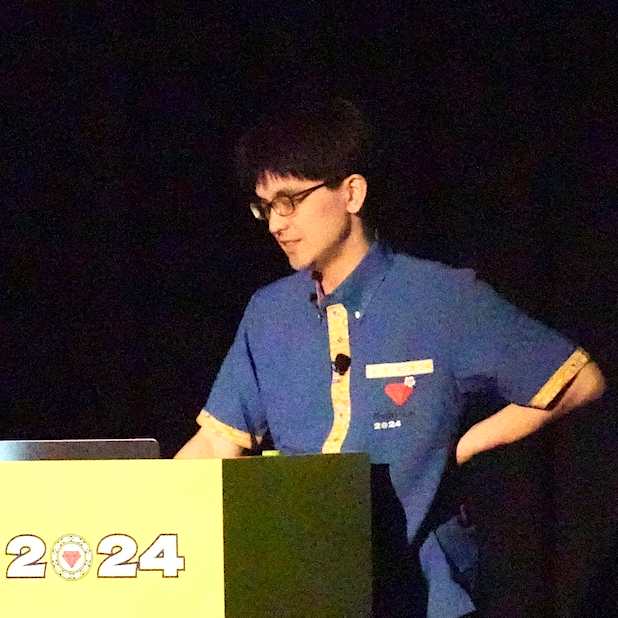
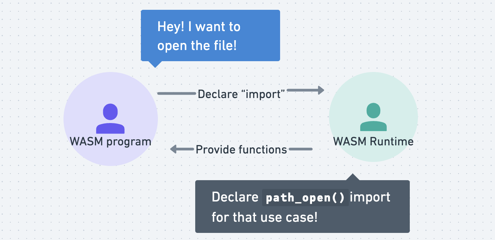
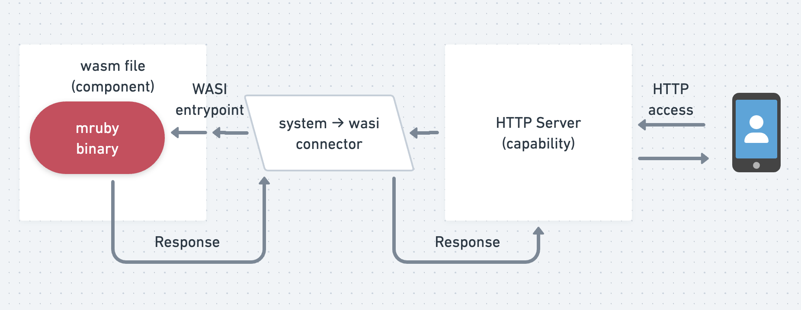

Previous slide Next slide Toggle fullscreen Open presenter view
Rubyをこじらせて
Ruby is like a teenage angst to me
@ Fukuoka Rubyist Kaigi 2024.09
Uchio Kondo (@udzura)
Affiliation: Mirrativ Inc.
Hacker Supporter @Fukuoka City Engineer Cafe
Advisor @Fjord Bootcamp
Co-translator of "Leraning eBPF" (O'Reilly Japan)
RubyKaigi Speaker (2016 ~) RubyKaigi 2019 Local Organizer @ Fukuoka

@ Fukuoka Rubyist Kaigi 2024.09
Recital of daily discipline
@ Fukuoka Rubyist Kaigi 2024.09
Prospectus
「目論見書」
@ Fukuoka Rubyist Kaigi 2024.09
Reflection of daily life
@ Fukuoka Rubyist Kaigi 2024.09
「解題」
@ Fukuoka Rubyist Kaigi 2024.09
2016
@ Fukuoka Rubyist Kaigi 2024.09
Haconiwa
@ Fukuoka Rubyist Kaigi 2024.09
Linux Container
@ Fukuoka Rubyist Kaigi 2024.09
Haconiwa is a Linux container
Combine Linux container components from scratch
cgroup
namespace
pivot_root
capability, seccomp, ...
Linuxの要素技術を自分で繋ぎ直したのがHaconiwa
@ Fukuoka Rubyist Kaigi 2024.09
(2017..2018)
@ Fukuoka Rubyist Kaigi 2024.09
2019
@ Fukuoka Rubyist Kaigi 2024.09
Local Organizer @ Fukuoka
@ Fukuoka Rubyist Kaigi 2024.09
CRIU
@ Fukuoka Rubyist Kaigi 2024.09
CRIU
Checkpoint and restore of processes (or containers)
Dump Rails' process status into files
Boot from it -> it's fast!
CRIUはプロセスをファイルにダンプして、そこから再生できるツール
@ Fukuoka Rubyist Kaigi 2024.09
2021
@ Fukuoka Rubyist Kaigi 2024.09
eBPF
@ Fukuoka Rubyist Kaigi 2024.09
Rucy
@ Fukuoka Rubyist Kaigi 2024.09
eBPF
Running programs with special format inside the Linux kernel
For Networking, Observability, Security...
Safer than kernel module
Deeper than system calls
eBPFは、カーネルの機能を使うための仕組みの一つ
@ Fukuoka Rubyist Kaigi 2024.09
What is Rucy
Rucy compiles Ruby scripts into special bytecodes
The eBPF bytecodes!
Rucy = Ruby Compiler = RuC
RucyはRubyスクリプトをeBPFの形式に「コンパイル」する
@ Fukuoka Rubyist Kaigi 2024.09
2022
@ Fukuoka Rubyist Kaigi 2024.09
eBPF (RbBCC)
@ Fukuoka Rubyist Kaigi 2024.09
How is Rucy different from RbBCC?
Name
Strategy
Detail
RbBCC JIT
Is an FFI to libbcc / Rusy Assoc. Grant
Rucy AOT
Compiles Ruby scripts into eBPF via mruby bytecodes
@ Fukuoka Rubyist Kaigi 2024.09
How are they different? (details)
Basically, eBPF is moving towards a AOT-compiled ecosystem (BPF CO-RE)
So the future is Rucy's side
RbBCC has a larger coverage of eBPF functions
Sufficient enough for learning and small tools
今の潮流はAOTだが、サクッと使う分にはRbBCCの方が機能が多い
@ Fukuoka Rubyist Kaigi 2024.09
[PR]
This book will help your understanding
Thanks to Tori-san, it is pleasant to read!
鳥井さん、ありがとうございました
@ Fukuoka Rubyist Kaigi 2024.09
2023
敗北を知りたい
@ Fukuoka Rubyist Kaigi 2024.09
2024
@ Fukuoka Rubyist Kaigi 2024.09
WebAssembly
@ Fukuoka Rubyist Kaigi 2024.09
WebAssembly
As you know, a technology for running code in browsers
「なんかブラウザで動くやつ」
@ Fukuoka Rubyist Kaigi 2024.09
WebAssembly is not only for browsers
Browsers are just "one of the runnable environments"
Can run everywhere with portable VM
ブラウザ外の「アプリケーション組み込み」が個人的に熱い。
@ Fukuoka Rubyist Kaigi 2024.09
The "Web" part of WebAssembly
Web Assembly will probably not be just for the web... Just like eBPF is no longer "Berkeley Packer Filter "
@ Fukuoka Rubyist Kaigi 2024.09
Why Ruby for WebAssembly (again)
Ruby for WebAssembly, with more "embeddability"
違うアプローチをしたい理由があります
@ Fukuoka Rubyist Kaigi 2024.09
Talk about this again later
@ Fukuoka Rubyist Kaigi 2024.09
Trends of thoughts
@ Fukuoka Rubyist Kaigi 2024.09
Trends
So-called low-level technologies?
Linux mania? (it's coincidentally)
"I tried utilizing ${mysterious_tech} from Ruby!"
「 ${謎技術} をRubyから使ってみた！」
@ Fukuoka Rubyist Kaigi 2024.09
My fighting style
「芸風」
@ Fukuoka Rubyist Kaigi 2024.09
Give a jab to the lower layers from Ruby World
低めのレイヤーにRubyでいっちょ噛み
@ Fukuoka Rubyist Kaigi 2024.09
Are you interested in low layers?
It's even "unknown unknown" from ordinary web application engineers...
普通にWebアプリを作ってる分には隠蔽されていることばかり...
@ Fukuoka Rubyist Kaigi 2024.09
Why low-level?
@ Fukuoka Rubyist Kaigi 2024.09
A typical low-layer project...
Has NO Ruby bindings
Has NO Ruby sample code
Just has samples for like Go, Python, C++, and Rust
最近の低レイヤツール、クラウドネイティブミドルウェア、マジでRubyの
@ Fukuoka Rubyist Kaigi 2024.09
low-layer is SOTA (state-of-the-art)
Desire to touch SOTA
I want to use Ruby even when touching advanced things
Rubyから触れない＝ ${最新の超技術X} がアウトオブ眼中になる、はなんか勿体無い
@ Fukuoka Rubyist Kaigi 2024.09
How am I satisfied with "Getting Started"?
Understand the essence through Ruby
Adapting SOTAs to Ruby == Hack
Rubyサポートを入れるには「本質」が分かってないといけないので勉強になる
@ Fukuoka Rubyist Kaigi 2024.09
Hack the SOTA technologies
@ Fukuoka Rubyist Kaigi 2024.09
Create something
@ Fukuoka Rubyist Kaigi 2024.09
Back to my newest idea
@ Fukuoka Rubyist Kaigi 2024.09
mruby/edge in Depth
@ Fukuoka Rubyist Kaigi 2024.09
WebAssembly in Depth
@ Fukuoka Rubyist Kaigi 2024.09
Core WebAssembly
Key specifications:
import/export Functions
Linear memory
I'll omit the latter for today...
Linear memoryは線形メモリとも / その話は今日は時間なし...
@ Fukuoka Rubyist Kaigi 2024.09
Making a smallest WebAssembly binary
#include <emscripten.h>
void log_something (int size) ;
int EMSCRIPTEN_KEEPALIVE calc_plus (int n, int m) {
log_something(n + m);
return 0 ;
}
@ Fukuoka Rubyist Kaigi 2024.09
Compile it with emscripten
$ emcc -o sample.wasm --js-library ./lib.js --no-entry ./sample.c
cache:INFO: - ok
mergeInto (LibraryManager .library , {
log_something : function (value ) { }
});
@ Fukuoka Rubyist Kaigi 2024.09
Export section
$ wasm-objdump -x -j Export sample.wasm
sample.wasm: file format wasm 0x1
Section Details:
Export[10]:
- memory[0] -> "memory"
- func[2] <calc_plus> -> "calc_plus"
- table[0] -> "__indirect_function_table"
- func[3] <_initialize> -> "_initialize" ...
Invoke calc_plus() from "browser"
@ Fukuoka Rubyist Kaigi 2024.09
Import section
$ wasm-objdump -x -j Import sample.wasm
sample.wasm: file format wasm 0x1
Section Details:
Import[1]:
- func[0] sig=2 <env.log_something> <- env.log_something
Inject log_something() "browser" function into wasm instance
@ Fukuoka Rubyist Kaigi 2024.09
How to use in browser
const obj = {
env : {
log_something : function (value ) {
let log = "sample wasm! 12 + 34 = " + value.toString ();
document .getElementById ("placeholder" ).innerText = log;
}
},
};
WebAssembly .instantiateStreaming (fetch ("./sample.wasm" ), obj).then (
(obj ) => {
obj.instance .exports .calc_plus (12 + 34 );
},
);
@ Fukuoka Rubyist Kaigi 2024.09
Live demo
Output: {{here}}
@ Fukuoka Rubyist Kaigi 2024.09
The primary concept of WebAssembly
昭和の表現で言えば「一丁目一番地」の仕様やで（個人の意見です）
@ Fukuoka Rubyist Kaigi 2024.09
Simple
@ Fukuoka Rubyist Kaigi 2024.09
WASI is simple if you understand import/export
WASI = A set of usable functions to import
For cooperation with the system in a nice way
WASI = 「これをimportして使えばシステム操作がええ感じにできるで」
@ Fukuoka Rubyist Kaigi 2024.09

@ Fukuoka Rubyist Kaigi 2024.09
e.g. Emulating WASI in a browser
random_get (buf: number , buf_len: number ) {
const buffer8 = new Uint8Array (...);
for (let i = 0 ; i < buf_len; i += 65536 ) {
crypto.getRandomValues (buffer8.subarray (i, i + 65536 ));
}
}
random_get をJSで書いてimportさせればWASMでrandomが使えるということ
@ Fukuoka Rubyist Kaigi 2024.09
What I expect with mruby/edge
To export Ruby method definitions as they are
To use imported functions as Ruby-level methods
@ Fukuoka Rubyist Kaigi 2024.09
Write it straightforward
素直にメソッドを書いたらexport/importされて欲しい
@ Fukuoka Rubyist Kaigi 2024.09
Code image (to be implemented)
This doesn't mean it will be implemented exactly this way...
def fib (n )
end
def console_log (str ) = __imported__!
def _start
console_log("Hello World " + fib(10 ).to_s)
end
@ Fukuoka Rubyist Kaigi 2024.09
One More Thing
@ Fukuoka Rubyist Kaigi 2024.09
Future of WebAssembly
@ Fukuoka Rubyist Kaigi 2024.09
Component Model
@ Fukuoka Rubyist Kaigi 2024.09
WebAssembly Component Model
Refer to interface of Core WASM
It's a bit fuzzy - like a C dynamic object
Be more convenient to "connect" programs and world
Core WASM の仕様は色々余地があるので、型をしっかりし、自動検知や
@ Fukuoka Rubyist Kaigi 2024.09
User-friendly typing system
Binary specification
Toolchains
Once the above is generally available
@ Fukuoka Rubyist Kaigi 2024.09
world rubyist-kaigi {
export fib: func(n: i32) -> i32;
import console_log: func(log : string );
}
OK, some kinda DSL may be desired
Rubyist的には...
@ Fukuoka Rubyist Kaigi 2024.09
FYI: Understanding by Hands-on
"手書きで理解するWebAssembly Component Model"
@ Fukuoka Rubyist Kaigi 2024.09
wasmCloud,
@ Fukuoka Rubyist Kaigi 2024.09
Running Ruby on wasmCloud
If you prefer working in a language that isn't listed here, let us know!
@ Fukuoka Rubyist Kaigi 2024.09
Example of running mruby/edge (roughly)
use mrubyedge::{mrb_helper, vm::RObject};
impl Guest for HttpServer {
fn handle (_request: IncomingRequest, response_out: ResponseOutparam) {
let write_response = |body: &str | { ... };
let bin = include_bytes! ("./fib.mrb" );
let rite = mrubyedge::rite::load (bin).unwrap ();
let mut vm = mrubyedge::vm::VM::open (rite);
vm.prelude ().unwrap ();
match mrb_helper::mrb_funcall (&mut vm, &top_self, "fib" .to_string (), &args) {
Ok (val) => { write_response (&val) }
Err (ex) => { dbg!(ex); }
}
}
}
@ Fukuoka Rubyist Kaigi 2024.09
Creating a WASM binary that contains mruby
$ wash build
Compiling http-hello-world v0.1.0 (/home/ubuntu/mrubyhttp)
Finished `release` profile [optimized] target(s) in 0.29s
Component built and signed and can be found at "/../build/http_hello_world_s.wasm"
$ $ strings build/http_hello_world_s.wasm | grep MATZ
MATZ0000IREP
$ wasm-tools component wit build/http_hello_world_s.wasm | head -n 20
package root:component;
world root {
import wasi:clocks/monotonic-clock@0.2.0;
// ....
// entry point
export wasi:http/incoming-handler@0.2.0;
}
@ Fukuoka Rubyist Kaigi 2024.09
Running this WASM on wasmCloud
$ wash app deploy wadm.yaml
$ wash app status rust-hello-world
rust-hello-world@ - Deployed
Name Kind Status
http_component SpreadScaler Deployed
httpserver -(wasi:http)-> http_component LinkScaler Deployed
httpserver SpreadScaler Deployed
$ curl localhost:8080
fib(15) = 610
@ Fukuoka Rubyist Kaigi 2024.09
wasmCloud concepts

@ Fukuoka Rubyist Kaigi 2024.09
Ruby wants to connect the world, too
Rubyでコアビジネスロジックを書く、特殊なアルゴリズムとかLLMなところとかクラウドネイティブな機能は
@ Fukuoka Rubyist Kaigi 2024.09
I talked with @yu_suke1994 at tskaigi about the future of Ruby, and we agreed that the only way for Ruby to survive is to release a lightweight runtime that supports wasm soon and integrate it with the component model ecosystem. So, @udzura, please do your best!
@ Fukuoka Rubyist Kaigi 2024.09
Wrapping up
@ Fukuoka Rubyist Kaigi 2024.09
See you in Matsuyama!
@ Fukuoka Rubyist Kaigi 2024.09
For audiences who's not so good at Japanese; Hola, I'm so happy to meet you here in Fukuoka.
"こじらせる" means: to develop a kind of obsession or a heavy addiction with something; for example, "趣味をこじらせる" means they has some addiction in their hobby.
I've written this slides in English, but I'll present this talk in Japanese.
So please feel free if you want to ask details about slide contents or codes at any time later.
- 所属: 株式会社ミラティブ
- 福岡市エンジニアカフェ ハッカーサポーター
- フィヨルドブートキャンプ アドバイザー
- 『入門 eBPF』（オライリージャパン）共同翻訳
- [RubyKaigi Speaker](https://rubykaigi-speakers.vercel.app/speakers/Uchio+KONDO) (2016 ~)
- RubyKaigi 2019 Local Organizer
- プロセス（=コンテナも対象）のCheckpoint&Restore
- プロセスの状態をファイルに保存し、再生する
- 2019 ではRailsの起動高速化への応用
- ライブマイグレーションほかにも使える
- Linuxカーネル内部で特別なバイナリ形式のプログラムを実行する技術
- ネットワーク、Observability、セキュリティ...
- カーネルモジュールより**は**安全
- 普通のシステムコールより奥深い情報を使える
logo: https://ebpf.foundation/brand-guidelines/
- RucyはRubyのスクリプトをそのバイトコードに**コンパイル**する
- Rucy = Ruby Compiler = RuC
- eBPFはカーネル内部に専用のVMを持つ＋
- 専用のバイトコード命令系をもつ
- YARVみたいなもんですね〜（そう？）
# RucyとRbBCCはどう違うのか
- RucyはRubyのスクリプトをそのバイトコードに**コンパイル**する
- Rucy = Ruby Compiler = RuC
- RbBCCは、そもそもBCC(libbcc)のFFI
- libbccは、C言語風のコードをその場でeBPFバイナリにコンパイルします
- Rubyから送られてきたデータを使えるという話
# BCCはどう違うのか
- 今の潮流はAOTコンパイルeBPFではあるので、Rucyを作りました
- RbBCCの方が使える機能は多いです
- 基本的にeBPFは**コンパイル型**のエコシステムに移行中
- BPF CO-RE などで検索
- なので未来があるのはRucyの方
- 一方、RbBCCはeBPFの基本的な機能を大体使える
- 多くの機能をちゃんと移植済み
- 学習用、ちょっとしたツールには十分なつもり
- これを読むと解像度が上がる
- 鳥井さんのお力で文章も読みやすい！
- でも僕は**そうは思ってない**
- アプリ組み込み環境のファイナルアンサーだと思っている
- ブラウザは「組み込める環境の一つ」にすぎない
- ポータブルなVM仕様でいろんなアプリに組み込める
- envoy, fluent-bit, Containers...
- [いつかは本物の組み込みにも](https://arxiv.org/html/2405.09213v1)
- eBPFがもはや全く "Berkeley **Packer Filter**" でないように
- **Web**AssemblyもWebだけではなくなるのだろう
- 「組み込み環境としてのWebAssembly」のためのRubyが欲しい
- （少なくとも僕はめっちゃ欲しいので...）
- mruby でゴニョっとすればいけるんじゃね？ というのが最初の発想
- 所謂低レイヤ？
- Linux ネタが多め（たまたま）
- ${謎技術} をRubyから使ってみた！
- Rubyのバインディングがない
- Rubyのサンプルコードがない
- Go、Python、C++、そしてRust他みたいな
- e.g. eBPF(BCC) の対応言語はPython、Lua、C++
- GoとRustは有志がeBPF向けSDKを作っていた
- コンピューターの世界は日々進歩しているらしい
- SOTAから進化が始まる
- Rubyが成果を享受できることもあるが...（それこそ、漸進的型とか）
- 便利なものや進んだものに触れる時もRubyからがいい
- 自分ごとにしたい
- 「わかったつもりになる」のは嫌だ
- Getting Started をやって満足？
- Ruby を通して、本質的な部分を理解する
- Ruby から使うことをあまり想定していないことが多い = Hack必須
- Hack することで深まる
- WASI = 「これをimportして使えばシステム操作がええ感じにできるで」という関数のセット
- プログラム側では仕様の通りに使えばいい
- WASI対応ランタイムでは、それらのimport用関数を準備すればいい
- まさにシステムコールを実装するような感じ
- Core WASMのインタフェース
- CのDLLのようにふわっとしたところがある
- 「繋がり部分」をきちっとしたら便利で安全になる
- 型（それもある程度柔軟な）
- バイナリ仕様
- ツールチェイン
- いい感じの型
- WIT形式
- 一種のRPCとも言える
- バイナリ仕様
- Canonical ABI
- ツールチェイン
- 上記が揃ったらどんどん作れるはず
- Rubyで低レイヤにいっちょ噛みしてることについて、多くの人にとってはあまり馴染みのない話題が多かったでしょうので、解題をしました。
- 最近のWASM周りの仕事もレイヤは低いですが、皆さんに使ってもらえる可能性のある面白いものができるといいなと思っていたりします。
- またrubykaigiで話しかけてくださいね。